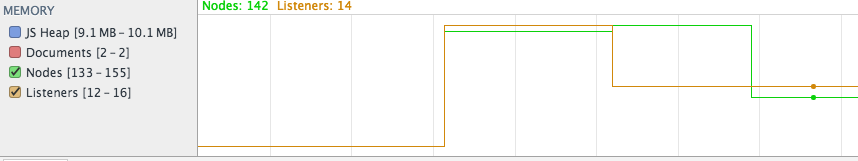

x
Steps to reproduce
- In chrome, open the dev tools "timelines" panel. Tick the box to capture memory usage.
- Clean up garbage (trash can button) and start recording
- Render the math, then revert it
- Clean up garbage again and stop recording
Expected result
- The number of DOM nodes in memory (green line) should be the same before rendering and after reverting.
Actual result
-
The number of DOM nodes in memory increases. They were created during render but not cleaned up during revert.

N.B. Make sure jQuery version v1.11.2 or later is used, otherwise a memory leak issue from jQuery itself (sizzle) comes into play.